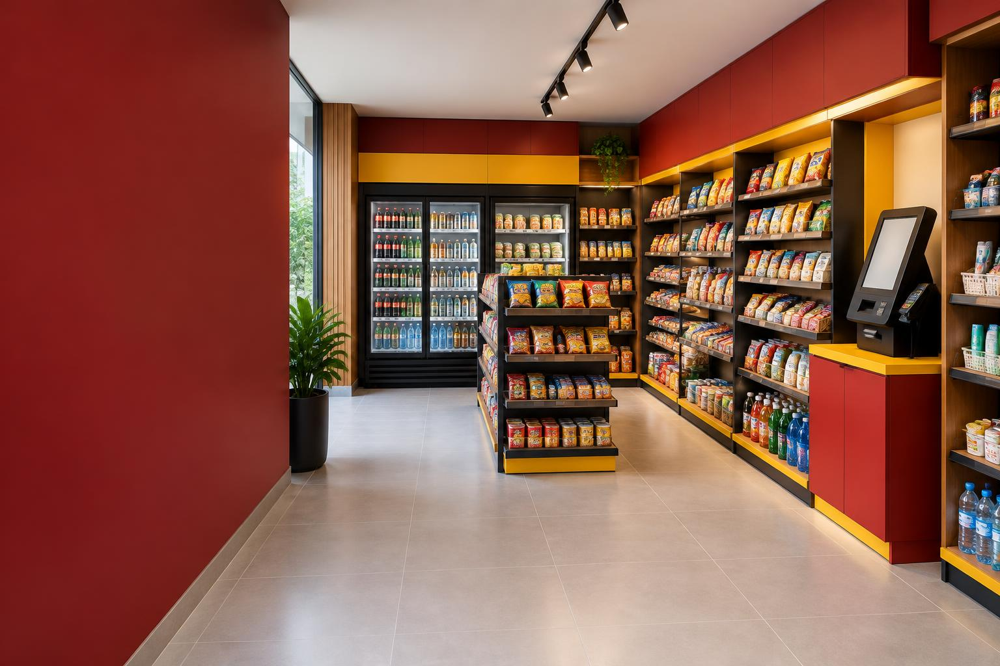

Sem investimento inicial
Equipamentos, estoque e operação por nossa conta. Entenda as condições.
Conheça os detalhes

Conveniência 24 horas dentro do seu condomínio.
Sem investimento inicial. Sem complicar a gestão.
Com tudo o que faz falta na hora que você precisa.
Seu condomínio não precisa virar comerciante. A Well Market assume a operação para levar conveniência à rotina de quem vive ali.
Equipamentos, estoque e operação por nossa conta. Entenda as condições.
Loja interna, estrutura compacta ou contêiner. A solução começa com uma avaliação.
Monitoramento, privacidade e responsabilidades bem definidas desde o início.
Produtos, reposição, limpeza e manutenção. Sem colocar a operação nas mãos do síndico.
Um período para conhecer a demanda e avaliar a aceitação dos moradores.
Aprovação, condições comerciais e responsabilidades. Clareza em cada etapa.
Sem sair do condomínio, sem filas e sem depender do horário do comércio.
Acesse o espaço seguindo o controle de acesso definido para a sua unidade.
Bebidas, alimentos e itens do dia a dia, com um mix pensado para os moradores.
Finalize sua compra pelo sistema de pagamento disponível no mercado.
É só levar suas compras. Nós cuidamos do estoque, da limpeza e da reposição.
O sistema de acesso e os meios de pagamento serão definidos no projeto de cada unidade.
Avaliamos espaço, estrutura, circulação e perfil dos moradores.
Definimos o layout e as condições, seguindo as regras do condomínio.
Organizamos equipamentos, produtos, sistema e identidade do mercado.
Acompanhamos a aceitação, ajustamos o mix e avaliamos a continuidade.
A proposta não prevê aluguel do espaço. Participação sobre o faturamento pode ser negociada, sem garantia de retorno. Aprovações, licenças e responsabilidades são validadas para cada local.
Respostas para síndicos, administradoras e moradores. Da instalação ao dia a dia do mercado.
Condições baseadas na apresentação comercial da Well Market. Cada implantação depende de avaliação técnica e contratual.
Vamos começar avaliando o seu espaço? A proposta inicial da Well Market é para a Grande Vitória. Empresas também podem apresentar interesse para avaliação específica.